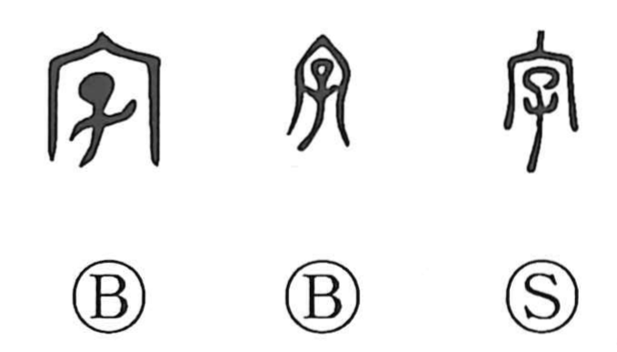

Explanation
字 combines 宀, the roofline of the ancestral mausoleum, with 子, a child. It evokes the rite held in the ancestors’ hall some days after a birth, once the infant’s survival seemed likely. There the child received an auxiliary name, the azana or courtesy name—also called a “small name.” Later, at a further rite announcing the child’s growth, a formal personal name (名) was bestowed, and a graph related to that personal name was chosen and conferred as the 字. In everyday life one avoided using the true personal name and instead used this courtesy name. Because the child’s nurture and social presentation were affirmed through these ceremonies, 字 came to suggest both the act of rearing and the bestowed epithet; from this practice the sense broadened to the written “character,” as in 文字. In Japanese, aza names a subdivision within a village or town.